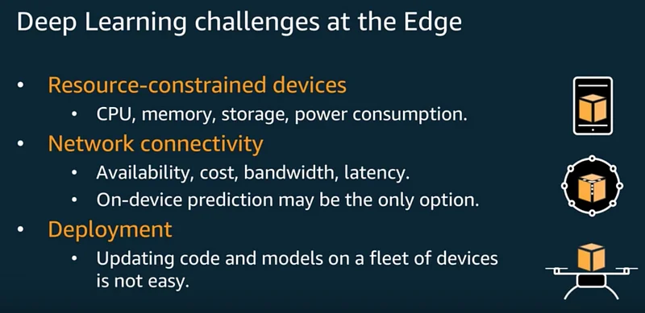

Webinar: Enabling Deep Learning in IoT applications with Apache MXNet
A few months ago, I wrote a post explaining why Apache MXNet is a good choice for Deep Learning at the Edge.
Days ago, I also recorded a webinar where I discuss the different options available to developers, using services such as Apache MXNet, Deep Learning AMI, Amazon SageMaker, AWS IoT, AWS Greengrass (ML), AWS DeepLens.

Here’s the agenda:
- Deep Learning at the Edge?
- Apache MXNet
- Predicting in the Cloud or at the Edge?
- AWS DeepLens
- Getting started
Enjoy!